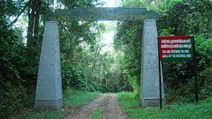
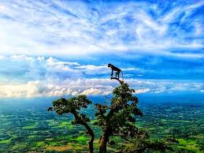

More place to Visit
"At work people are expected to be at the beck and call of employers all the time. You have blackberries and other things, and they just don't leave you alone. People have less time just to drop into an art gallery." view

